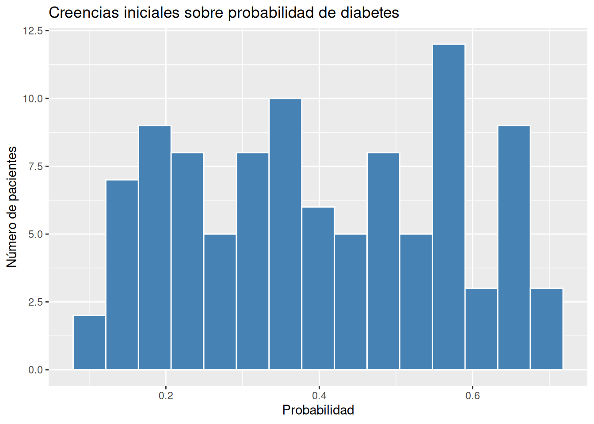

“Este paciente tiene alta probabilidad de tener alteración metabólica”
Aquí está la clave
La probabilidad no es solo contar cosas que ya pasaron.
También es:
Tu grado de creencia dada la información disponible
Dos formas de entender la probabilidad
1. Probabilidad como frecuencia (forma clásica)
Es la que aprendemos primero.
Ejemplo:
“El 10% de los adultos tiene diabetes”
Esto significa:
Si tomas 100 personas, aproximadamente 10 tendrán diabetes.
✔️ Es objetiva
✔️ Se basa en datos repetidos
Pero tiene un problema en clínica:
👉 Tu paciente no es un promedio
2. Probabilidad como creencia (enfoque bayesiano)
Ahora cambia el enfoque:
“Dado lo que sé de este paciente… ¿qué tan probable es que tenga diabetes?”
Esto depende de:
lo que ya sabías antes (experiencia, prevalencia)
la nueva información (glicemia, HbA1c, IMC)
✔️ Es dinámica
✔️ Se actualiza
✔️ Es personalizada
Ejemplo clínico clave
Piensa en esto:
Antes de ver al paciente, tú ya tienes una idea:
“En mi población, la probabilidad de diabetes es moderada”
Eso es una creencia inicial (aunque no la llames así).
Luego ves:
glicemia elevada
HbA1c alta
Y tu pensamiento cambia:
“Ahora estoy más convencido de que tiene diabetes”
👉 Acabas de hacer Bayes sin saberlo
La idea central del capítulo
La probabilidad no es fija.
Es algo que:
Empieza como una creencia inicial
Se actualiza con nueva información
Nunca llega a certeza absoluta
Certeza vs Probabilidad
En medicina casi nunca hay certeza.
Situación
¿Hay certeza?
Diagnóstico clínico
❌
IMC elevado
❌
Inflamación crónica
❌
Riesgo cardiometabólico
❌
👉 Todo es probabilístico
Conexión con obesidad
Según La Teoría Hormonal de la Obesidad:
La obesidad no es binaria
No es: “obeso vs no obeso”
Es un continuo metabólico:
resistencia a la insulina
inflamación
disfunción hormonal
👉 Entonces:
No existe “certeza de enfermedad” Solo grados de probabilidad
2. Ejemplo simple (simulación en R)
Vamos a simular algo muy sencillo.
Queremos representar nuestra “creencia” sobre si un paciente tiene diabetes.
set.seed(123)# Creamos 100 pacientes simuladospacientes <-tibble(id =1:100,prob_diabetes =runif(100, 0.1, 0.7) # creencias iniciales) # Donde 100 es el número de observaciones , 0.1 es la probabilidad# mínima y 0.7 es la probabilidad máxima#unique(pacientes$prob_diabetes)[1:20] # produce:#[1] 0.4599934 0.2996941 0.3931678 0.6726843 0.3897414 0.6342101#[7] 0.6486629 0.4652410 0.3464139 0.1882568 0.6611799 0.2807373#[13] 0.1364323 0.6686362 0.5323578 0.1853766 0.4295708 0.6724547#[19] 0.4512900 0.3427062# Visualizamos la incertidumbreggplot(pacientes, aes(x = prob_diabetes)) +geom_histogram(bins =15, fill ="steelblue", color ="white") +labs(title ="Creencias iniciales sobre probabilidad de diabetes",x ="Probabilidad",y ="Número de pacientes" )

¿Qué significa esto?
Cada paciente tiene una probabilidad distinta:
algunos: 10%
otros: 50%
otros: 70%
👉 No hay certeza
👉 Hay incertidumbre distribuida
Ahora agregamos información nueva
Simulemos que medimos glicemia:
# Simulemos que medimos glicemia:# Donde 100 es número de pacientes, 1 es un intento y prob_diabetes # es la probabilidad de diabetespacientes <- pacientes %>%mutate(glicemia_alta =rbinom(100, 1, prob_diabetes) )#unique(pacientes$glicemia_alta) # produce: [1] 0 1#table(pacientes$glicemia_alta) # produce:#0 1 #57 43